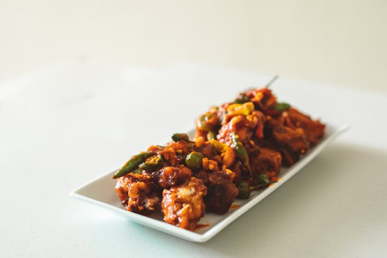

Home
Chicken Curry with Coconut

Description
This dish is a burst of flavors! The chicken is cooked in a creamy curry sauce with coconut milk,
creating a rich and aromatic blend.
It's a simple yet flavorful recipe, perfect for those who love exotic flavors and comforting meals.
It pairs wonderfully with white rice or even naan bread for a complete meal.
Ingredients
- 500g (about 1 lb) chicken breast, cut into cubes
- 1 tablespoon vegetable oil or olive oil
- 1 medium onion, chopped
- 2 cloves garlic, minced
- 1 tablespoon fresh grated ginger
- 2 tablespoons curry powder
- 1 teaspoon ground cumin
- 1/2 teaspoon turmeric (ground)
- 1 can (200ml) coconut milk
- 1 cup chicken or vegetable broth
- 1 tablespoon soy sauce (optional)
- Salt and black pepper, to taste
- 1 tablespoon lemon juice
- Fresh cilantro, chopped, for garnish (optional)
Steps
-
Season the chicken:
Season the chicken cubes with salt and black pepper to taste, then set aside.
-
Sauté onion, garlic, and ginger:
In a large pan, heat the oil over medium heat.
Add the chopped onion and sauté for about 3 minutes, until soft.
Add the minced garlic and grated ginger, and sauté for another 1-2 minutes until fragrant.
-
Add the spices:
Add the curry powder, cumin, and turmeric to the pan. Stir well and cook for about 1 minute,
allowing the spices to release their flavors, but be careful not to burn them.
-
Cook the chicken:
Add the chicken cubes to the pan and stir well to coat the chicken in the spices.
Cook for 5-7 minutes, until the chicken starts to brown.
-
Add coconut milk and broth:
Pour in the coconut milk and chicken (or vegetable) broth, stirring to combine.
Bring to a boil, then reduce the heat to medium-low. Simmer for about 15-20 minutes,
until the chicken is fully cooked and the sauce has thickened.
-
Adjust the flavor:
Stir in the soy sauce (if using) and lemon juice to balance the sweetness and acidity of the dish.
Taste the sauce and adjust the salt and pepper if necessary.
-
Serve and garnish:
Serve the chicken curry over white rice or jasmine rice. Garnish with freshly chopped cilantro, and if desired,
serve with naan bread or tortillas.